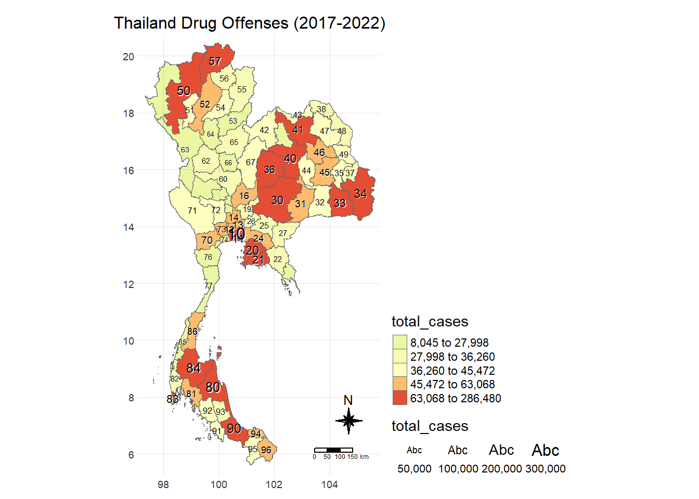
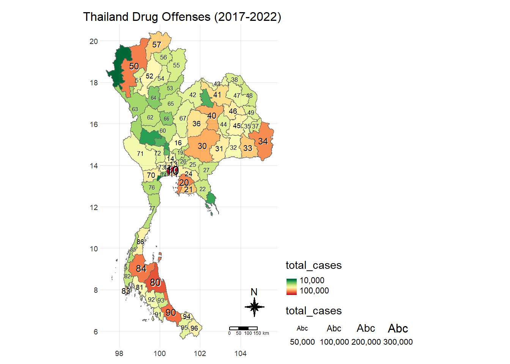
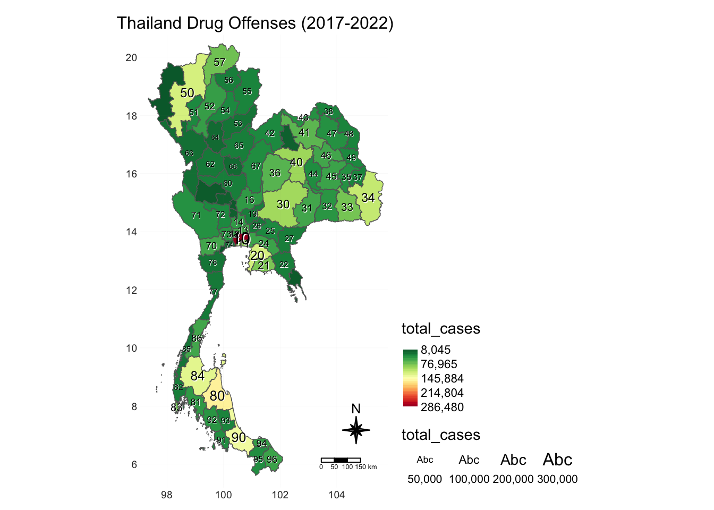
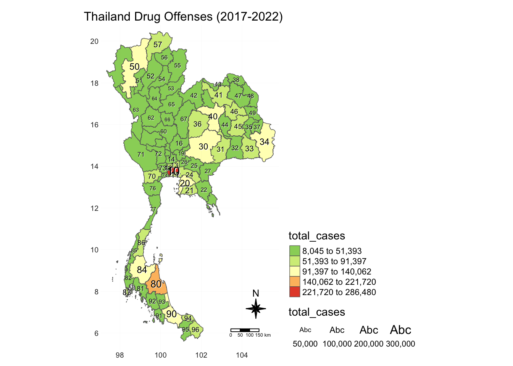
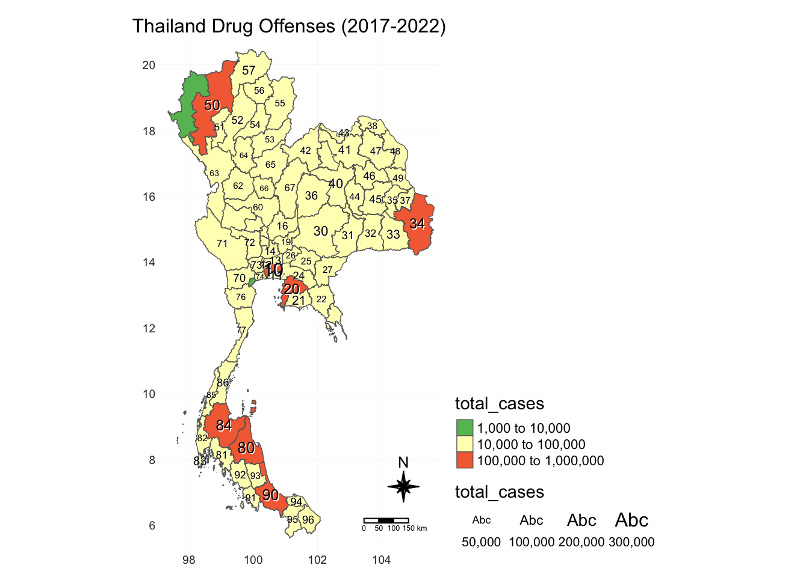
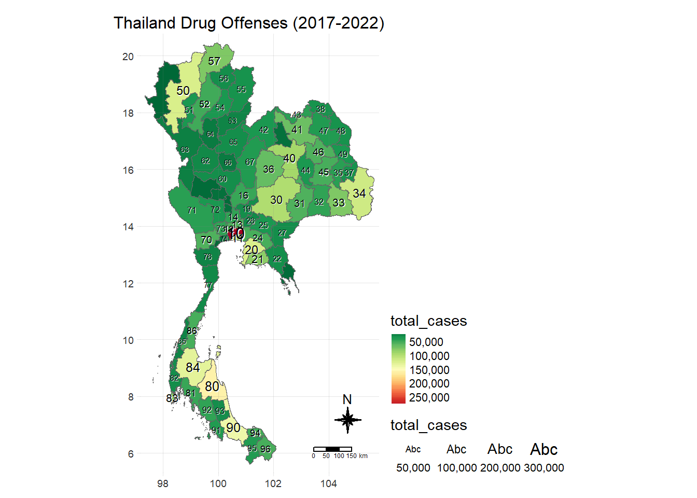
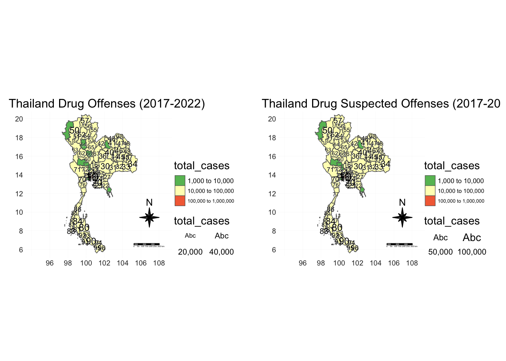
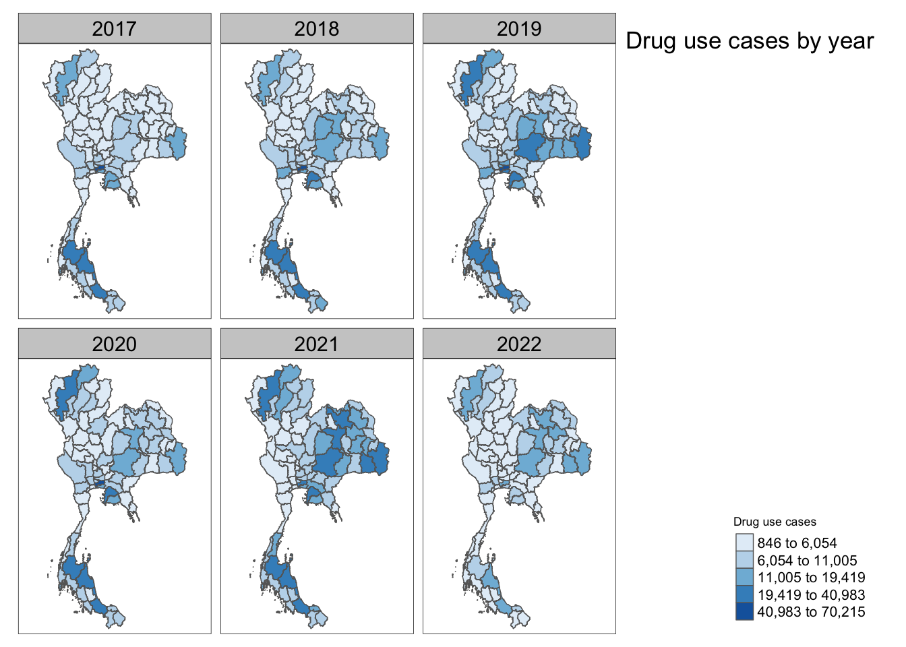

pacman::p_load(sf,tidyverse,skimr,readxl,sfdep,tmap,fitdistrplus)Take-Home Exercise 2: Application of Geospatial Analysis Methods to Discover Thailand Drug Abuse at the Province Level
Background
Nothing for now.
Terms
Thailand administrative level 0 (country): admin0,
1 (province): admin1
2 (district): admin2
3 (sub-district, tambon): admin3
For the purposes of this exercise I will be dealing with admin1 only (province-level).
Objectives
R Packages used
sf
tidyverse
readxl: since both datasets are in xls/xlsx format
skimr
sfdep
tmap
fitdist: finding out distribution type to match to match tmap style
Data
Metadata
fiscal_year: recorded year
types_of_drug_offenses: category of offense
no_cases: total records for combination of year, drug offense type and province
province_th: province name in thai (drop)
province_en
Import
thai_drug_offences_sf <- read_csv('data/aspatial/thai_drug_offenses_2017_2022.csv')Rows: 7392 Columns: 5
── Column specification ────────────────────────────────────────────────────────
Delimiter: ","
chr (3): types_of_drug_offenses, province_th, province_en
dbl (2): fiscal_year, no_cases
ℹ Use `spec()` to retrieve the full column specification for this data.
ℹ Specify the column types or set `show_col_types = FALSE` to quiet this message.str(thai_drug_offences_sf)summ_table <- skim(thai_drug_offences_sf) %>% as.data.frame()
summ_table
No missing data
Date range is indeed 2017 to 2022
16 types of drug offenses (check unique values)
summary statistics of overall
no_casesseem to indicate right-skew
thai_no_case <- summ_table %>% filter(skim_variable == 'no_cases') %>% select(c(10:16))
thai_no_caseMight need to view by offense type to see offense-specific distributions
Identify the unique values for each categorical column
unique(thai_drug_offences_sf$fiscal_year)offense_type <- unique(thai_drug_offences_sf$types_of_drug_offenses)
offense_typeCleaning
Remove thai labels
thai_drug_offences_sf <- thai_drug_offences_sf %>% dplyr::select(1,2,3,5)Import
thai_admin1_sf <- st_read(
dsn = 'data/geospatial/tha_adm_rtsd_itos_20210121_shp/',
layer ='tha_admbnda_adm1_rtsd_20220121')Reading layer `tha_admbnda_adm1_rtsd_20220121' from data source
`/Users/williamtjw/is415-gaa-williamtjw/resources/Take-home_Ex/ex2/data/geospatial/tha_adm_rtsd_itos_20210121_shp'
using driver `ESRI Shapefile'
Simple feature collection with 77 features and 16 fields
Geometry type: MULTIPOLYGON
Dimension: XY
Bounding box: xmin: 97.34336 ymin: 5.613038 xmax: 105.637 ymax: 20.46507
Geodetic CRS: WGS 84glimpse(thai_admin1_sf)Extracting Columns
Lots of completely missing fields and repetition across the columns.
thai_admin1_sf <- thai_admin1_sf %>% dplyr::select(1:3,5)
thai_admin1_sfSimple feature collection with 77 features and 4 fields
Geometry type: MULTIPOLYGON
Dimension: XY
Bounding box: xmin: 97.34336 ymin: 5.613038 xmax: 105.637 ymax: 20.46507
Geodetic CRS: WGS 84
First 10 features:
Shape_Leng Shape_Area ADM1_EN ADM1_PCODE
1 2.417227 0.13133873 Bangkok TH10
2 1.695100 0.07926199 Samut Prakan TH11
3 1.251111 0.05323766 Nonthaburi TH12
4 1.884945 0.12698345 Pathum Thani TH13
5 3.041716 0.21393797 Phra Nakhon Si Ayutthaya TH14
6 1.739908 0.07920961 Ang Thong TH15
7 5.693342 0.54578838 Lop Buri TH16
8 1.778326 0.06872655 Sing Buri TH17
9 2.896316 0.20907828 Chai Nat TH18
10 4.766446 0.29208711 Saraburi TH19
geometry
1 MULTIPOLYGON (((100.6139 13...
2 MULTIPOLYGON (((100.7306 13...
3 MULTIPOLYGON (((100.3415 14...
4 MULTIPOLYGON (((100.8916 14...
5 MULTIPOLYGON (((100.5131 14...
6 MULTIPOLYGON (((100.3332 14...
7 MULTIPOLYGON (((101.3453 15...
8 MULTIPOLYGON (((100.3691 15...
9 MULTIPOLYGON (((100.1199 15...
10 MULTIPOLYGON (((101.3994 15...any(duplicated(thai_admin1_sf))Aggregating by Province
Relational Join
set.seed(69)province_drug_offences <- thai_drug_offences_sf %>%
group_by(province_en) %>%
summarize(total_cases = sum(no_cases), .groups = 'drop')
head(province_drug_offences)# A tibble: 6 × 2
province_en total_cases
<chr> <dbl>
1 Amnat Charoen 35435
2 Ang Thong 16168
3 Bangkok 286480
4 Buri Ram 57352
5 Chachoengsao 53514
6 Chai Nat 15310combined_prepped_drug_offences_ <- left_join(province_drug_offences, thai_admin1_sf,by = c('province_en'='ADM1_EN')) %>% st_as_sf()
glimpse(combined_prepped_drug_offences_)tmap_mode('plot')
tm_shape(combined_prepped_drug_offences_)+
tm_polygons() +
tm_fill(alpha = .5,col = combined_prepped_drug_offences_$total_cases)
tm_text(combined_prepped_drug_offences_$province_en)Landmine
This is where I encountered the first landmine of sorts. The above code results in:
Error in `$<-`:
! Assigned data `as.numeric(...)` must be compatible with existing data.
✖ Existing data has 77 rows.
✖ Assigned data has 75 rows.
ℹ Only vectors of size 1 are recycled.
Caused by error in `vectbl_recycle_rhs_rows()`:
! Can't recycle input of size 75 to size 77.So I went to re-check the left-joined table prepped_drug_offences . I realised for the “buogkan” and “Loburi” rows, besides the ‘total_cases’ field, the rest of the fields were empty.
Seeing how suspiciously “buogkan” looks like a typo, I went to Google both “buogkan” and “Loburi” along with Thailand. Sure enough, the suggested words of “buogkan” and “Loburi” turned out to be “Bueng Kan” and “Lop buri” respectively.
Turned out the Thailand Drug Offenses had the 2 erroneous province names, while the shapefiles’ province labels checked out.
I will have to do manual replacements for all affected fields in thai_drug_offences_sf
Fixing Mispelled Province Names
Check before
unique(thai_drug_offences_sf$province_en)[6]
unique(thai_drug_offences_sf$province_en)[30]Rename
thai_drug_offences_sf$province_en[which(thai_drug_offences_sf$province_en == "Loburi")] <- 'Lop buri'
thai_drug_offences_sf$province_en[which(thai_drug_offences_sf$province_en == "buogkan")] <- 'Bueng Kan'Check fix
unique(thai_drug_offences_sf$province_en)[6]
unique(thai_drug_offences_sf$province_en)[30]That should resolve the landmine.
[Again] Relational Join
thai_adm1_drug_offences_sf <- left_join(
(
thai_drug_offences_sf %>%
mutate(province_en = toupper(province_en)) %>%
group_by(province_en) %>%
summarize(total_cases = sum(no_cases), .groups = 'drop')),
(
thai_admin1_sf %>%
mutate(
ADM1_EN = toupper(ADM1_EN),
ADM1_PCODE = substr(ADM1_PCODE, 3, nchar(ADM1_PCODE)))),
by = c('province_en'='ADM1_EN')) %>%
st_as_sf()
str(thai_adm1_drug_offences_sf)sf [77 × 6] (S3: sf/tbl_df/tbl/data.frame)
$ province_en: chr [1:77] "AMNAT CHAROEN" "ANG THONG" "BANGKOK" "BUENG KAN" ...
$ total_cases: num [1:77] 35435 16168 286480 35287 57352 ...
$ Shape_Leng : num [1:77] 3.93 1.74 2.42 4.41 8.7 ...
$ Shape_Area : num [1:77] 0.2753 0.0792 0.1313 0.3408 0.8445 ...
$ ADM1_PCODE : chr [1:77] "37" "15" "10" "38" ...
$ geometry :sfc_MULTIPOLYGON of length 77; first list element: List of 1
..$ :List of 1
.. ..$ : num [1:29925, 1:2] 105 105 105 105 105 ...
..- attr(*, "class")= chr [1:3] "XY" "MULTIPOLYGON" "sfg"
- attr(*, "sf_column")= chr "geometry"
- attr(*, "agr")= Factor w/ 3 levels "constant","aggregate",..: NA NA NA NA NA
..- attr(*, "names")= chr [1:5] "province_en" "total_cases" "Shape_Leng" "Shape_Area" ...Distribution of no_cases
Overall
plot(thai_drug_offences_sf$no_cases)plot(fitdist(thai_drug_offences_sf$no_cases, 'norm'))Check distributions annually to verify
thai_17 <- thai_drug_offences_sf %>% filter(fiscal_year==2017)
thai_18 <- thai_drug_offences_sf %>% filter(fiscal_year==2018)
thai_19 <- thai_drug_offences_sf %>% filter(fiscal_year==2019)
thai_20 <- thai_drug_offences_sf %>% filter(fiscal_year==2020)
thai_21 <- thai_drug_offences_sf %>% filter(fiscal_year==2021)
thai_22 <- thai_drug_offences_sf %>% filter(fiscal_year==2022)plot(fitdist(thai_17$no_cases, 'norm'))
plot(fitdist(thai_18$no_cases, 'norm'))
plot(fitdist(thai_19$no_cases, 'norm'))
plot(fitdist(thai_20$no_cases, 'norm'))
plot(fitdist(thai_21$no_cases, 'norm'))
plot(fitdist(thai_22$no_cases, 'norm'))plot(thai_adm1_drug_offences_sf$total_cases)plot(fitdist(thai_adm1_drug_offences_sf$total_cases, 'norm'))Conclusions: Right Skewed; Fat right tail; Outliers present
Hence, to visualise the continuous variable
total_cases, I am goin to experiment with:
quantile
log10
order
headtails
log10_pretty
cont
Visualise
tmap_mode('plot')tmap mode set to plottingReveal Code
tm_shape(thai_adm1_drug_offences_sf) +
tm_fill(
col = "total_cases",
palette = "-RdYlGn",
style = "quantile", # Use quantiles to emphasize hotspots
border.col = "white",
lwd = 0.666, # Adjust line width of province borders
) +
tm_text(
"ADM1_PCODE", # Province NUMERIC code
size = "total_cases", # proportional symbols
col = "black",
# auto.placement = TRUE,
shadow = TRUE
) +
tm_borders(lwd = 0.666) + # Border thickness
tm_compass(type="8star", size = 1.666) +
tm_scale_bar(width = 0.156, position = c("right", "bottom")) +
tm_grid(lwd = 0.1, alpha = 0.2) +
tm_layout(
legend.outside = TRUE,
frame = FALSE,
main.title = "Thailand Drug Offenses (2017-2022)",
main.title.size = 1.0
) +
tm_legend(position = c("right", "bottom")) # Legend Position
Reveal Code
tm_shape(thai_adm1_drug_offences_sf) +
tm_fill(
col = "total_cases",
palette = "-RdYlGn",
style = "log10", # Use quantiles to emphasize hotspots
border.col = "white",
lwd = 0.666, # Adjust line width of province borders
) +
tm_text(
"ADM1_PCODE", # Province NUMERIC code
size = "total_cases", # proportional symbols
col = "black",
# auto.placement = TRUE,
shadow = TRUE
) +
tm_borders(lwd = 0.666) + # Border thickness
tm_compass(type="8star", size = 1.666) +
tm_scale_bar(width = 0.156, position = c("right", "bottom")) +
tm_grid(lwd = 0.1, alpha = 0.2) +
tm_layout(
legend.outside = TRUE,
frame = FALSE,
main.title = "Thailand Drug Offenses (2017-2022)",
main.title.size = 1.0
) +
tm_legend(position = c("right", "bottom")) # Legend Position
Reveal Code
tm_shape(thai_adm1_drug_offences_sf) +
tm_fill(
col = "total_cases",
palette = "-RdYlGn",
style = "order", # Use quantiles to emphasize hotspots
border.col = "white",
lwd = 0.666, # Adjust line width of province borders
) +
tm_text(
"ADM1_PCODE", # Province NUMERIC code
size = "total_cases", # proportional symbols
col = "black",
# auto.placement = TRUE,
shadow = TRUE
) +
tm_borders(lwd = 0.666) + # Border thickness
tm_compass(type="8star", size = 1.666) +
tm_scale_bar(width = 0.156, position = c("right", "bottom")) +
tm_grid(lwd = 0.1, alpha = 0.2) +
tm_layout(
legend.outside = TRUE,
frame = FALSE,
main.title = "Thailand Drug Offenses (2017-2022)",
main.title.size = 1.0
) +
tm_legend(position = c("right", "bottom")) # Legend Position
Reveal Code
tm_shape(thai_adm1_drug_offences_sf) +
tm_fill(
col = "total_cases",
palette = "-RdYlGn",
style = "headtails", # Use quantiles to emphasize hotspots
border.col = "white",
lwd = 0.666, # Adjust line width of province borders
) +
tm_text(
"ADM1_PCODE", # Province NUMERIC code
size = "total_cases", # proportional symbols
col = "black",
# auto.placement = TRUE,
shadow = TRUE
) +
tm_borders(lwd = 0.666) + # Border thickness
tm_compass(type="8star", size = 1.666) +
tm_scale_bar(width = 0.156, position = c("right", "bottom")) +
tm_grid(lwd = 0.1, alpha = 0.2) +
tm_layout(
legend.outside = TRUE,
frame = FALSE,
main.title = "Thailand Drug Offenses (2017-2022)",
main.title.size = 1.0
) +
tm_legend(position = c("right", "bottom")) # Legend Position
Reveal Code
tm_shape(thai_adm1_drug_offences_sf) +
tm_fill(
col = "total_cases",
palette = "-RdYlGn",
style = "log10_pretty", # Use quantiles to emphasize hotspots
border.col = "white",
lwd = 0.666, # Adjust line width of province borders
) +
tm_text(
"ADM1_PCODE", # Province NUMERIC code
size = "total_cases", # proportional symbols
col = "black",
# auto.placement = TRUE,
shadow = TRUE
) +
tm_borders(lwd = 0.666) + # Border thickness
tm_compass(type="8star", size = 1.666) +
tm_scale_bar(width = 0.156, position = c("right", "bottom")) +
tm_grid(lwd = 0.1, alpha = 0.2) +
tm_layout(
legend.outside = TRUE,
frame = FALSE,
main.title = "Thailand Drug Offenses (2017-2022)",
main.title.size = 1.0
) +
tm_legend(position = c("right", "bottom")) # Legend Position
Reveal Code
tm_shape(thai_adm1_drug_offences_sf) +
tm_fill(
col = "total_cases",
palette = "-RdYlGn",
style = "cont", # Use quantiles to emphasize hotspots
border.col = "white",
lwd = 0.666, # Adjust line width of province borders
) +
tm_text(
"ADM1_PCODE", # Province NUMERIC code
size = "total_cases", # proportional symbols
col = "black",
# auto.placement = TRUE,
shadow = TRUE
) +
tm_borders(lwd = 0.666) + # Border thickness
tm_compass(type="8star", size = 1.666) +
tm_scale_bar(width = 0.156, position = c("right", "bottom")) +
tm_grid(lwd = 0.1, alpha = 0.2) +
tm_layout(
legend.outside = TRUE,
frame = FALSE,
main.title = "Thailand Drug Offenses (2017-2022)",
main.title.size = 1.0
) +
tm_legend(position = c("right", "bottom")) # Legend Position
'log10'style had the best visualisation of the distribution drug offenses in terms of contrast between ‘hot’ and ‘cold’ spots and overall aesthetics.
Aggregating by Time & Province (Same as on Prof’s site)
Prepare data
thai_drug_offences_sf_by_province_year <- left_join(
(thai_drug_offences_sf %>%
mutate(province_en = toupper(province_en)) %>% group_by(fiscal_year)),
(thai_admin1_sf %>%
mutate(ADM1_EN = toupper(ADM1_EN), ADM1_PCODE = substr(ADM1_PCODE, 3, nchar(ADM1_PCODE)))),
by = c('province_en'='ADM1_EN')) %>%
st_as_sf() %>%
group_by(fiscal_year,province_en,ADM1_PCODE, geometry) %>%
summarise(total_cases = sum(no_cases, na.rm = TRUE), .groups = "drop")
.groups = "drop"avoids creating unnecessary group structure
Check
glimpse(thai_drug_offences_sf_by_province_year)Visualise using tmap
As previously plotted, the distribution of drug offenses in Thailand (across time periods and within province areas) is characteristic of a right-skewed distribution or heavy-tailed distribution. Hence, a logarithmic scale or a Jenks Natural Breaks method would be suitable to handle the skewness and emphasize meaningful breaks in the data.
Log
Reveal Code
tm_shape(thai_drug_offences_sf_by_province_year) +
tm_fill(
col = "total_cases",
palette = "Blues", # Use a blue color palette similar to the image
style = "log10", # Adjust based on the distribution of your data
n = 5, # Define number of bins for colors
title = "Drug use cases"
) +
tm_borders() +
tm_facets(by = "fiscal_year", nrow = 2, ncol = 3) + # Facet by year, 2 rows and 3 columns
tm_layout(
title = "Drug use cases by year", # Title for the entire plot
legend.position = c("right", "bottom"), # Position the legend on the right
panel.label.size = 1.333, # Adjust the size of the year labels
legend.title.size = .666, # Customize the size of the legend title
legend.text.size = .666 # Customize the size of the legend text
)
Jenks
Reveal Code
# Create the faceted map
tm_shape(thai_drug_offences_sf_by_province_year) +
tm_fill(
col = "total_cases",
palette = "Blues", # Use a blue color palette similar to the image
style = "jenks", # Adjust based on the distribution of your data
n = 5, # Define number of bins for colors
title = "Drug use cases"
) +
tm_borders() +
tm_facets(by = "fiscal_year", nrow = 2, ncol = 3) + # Facet by year, 2 rows and 3 columns
tm_layout(
title = "Drug use cases by year", # Title for the entire plot
legend.position = c("right", "bottom"), # Position the legend on the right
panel.label.size = 1.333, # Adjust the size of the year labels
legend.title.size = .666, # Customize the size of the legend title
legend.text.size = .666 # Customize the size of the legend text
)
Jenks has better contrast between hot and cold spots overall compared to the logarithmic method
[FUTURE] Comparing with Population Data
<TODO>
write_rds(thai_drug_offences_sf_by_province_year, 'data/rds/thai_drug_offences_sf_by_province_year.rds')thai_drug_offences_sf_by_province_year = read_rds('data/rds/thai_drug_offences_sf_by_province_year.rds')